وسائط متعددة وانقطاع في سير العمل.
- وثائق وملاحظات متفرقة
- صعوبة ربط التحضير بالتنفيذ الميداني
- التتبع والتقويم والتصدير في أدوات منفصلة
- وقت ضائع في البحث عن الخطوة التالية
خطط للسنة والحلقات، حضّر التشخيص والحصص، تتبع أقسامك في الميدان، قوّم ثم صدّر النتائج — ضمن مسار واحد صُمم حول العمل الحقيقي لأستاذ التربية البدنية والرياضية.
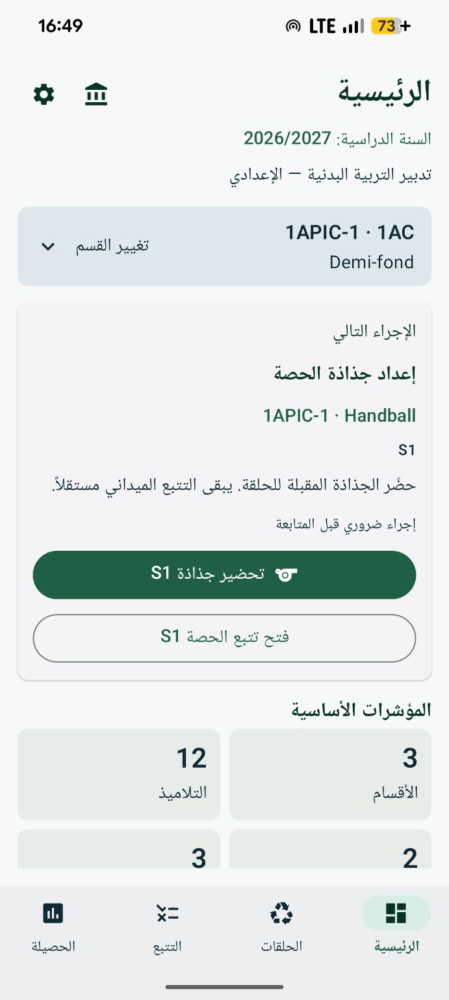
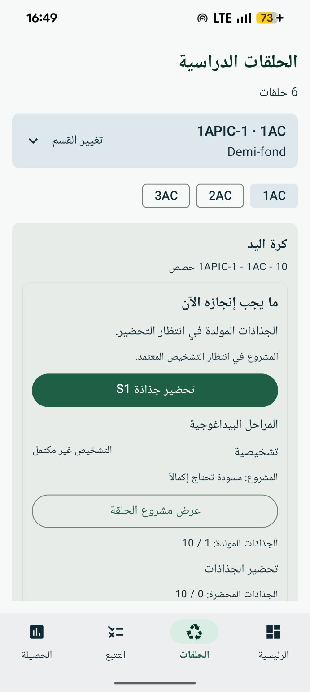
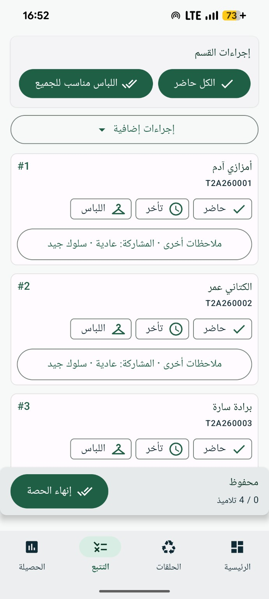
يربط EPSIQ القرارات البيداغوجية داخل مسار واحد ويُظهر بوضوح الخطوة التالية.
تجيب الواجهة الرئيسية أولاً عن سؤال بسيط: ماذا ينبغي أن أفعل الآن؟
تستهدف النسخة الحالية أساتذة التربية البدنية والرياضية في السلكين الإعدادي والتأهيلي بالمغرب — 1AC و2AC و3AC والجذع المشترك و1BAC و2BAC — ممن يرغبون في ربط التحضير والميدان والتقويم والوثائق دون تعدد الأدوات.
واجهة منظمة حول الأقسام والمستويات والحلقات والحصص في السلكين الإعدادي والتأهيلي.
تحضير في المنزل، مراجعة قبل الحصة، وتتبع سريع في الميدان من هاتف Android.
السنة الدراسية، مستويات الإعدادي والتأهيلي، استيراد الأقسام، التصدير واستعمالات مصممة للسياق المهني للتربية البدنية بالمغرب.
EPSIQ ليس مجرد سجل للحضور؛ بل يربط المراحل التي تكوّن فعلياً عمل الأستاذ.
لا يقدّم EPSIQ مساعداته البيداغوجية باعتبارها قيماً رسمية. يميّز التطبيق بين ما مصدره مراجع مغربية متحقق منها، وما تم اشتقاقه لتسهيل الملاحظة أو التنظيم، وما يبقى اقتراحاً قابلاً للتعديل والتحقق من طرف الأستاذ.
في التقويم: يحترم EPSIQ شبكات التقويم والمعايير وسلالم وطرائق التنقيط الرسمية المتحقق منها والمدمجة، وفق المستوى والنشاط والإطار البيداغوجي المطبق.
يعتمد التصميم البيداغوجي لـEPSIQ خصوصاً على التوجيهات التربوية للتربية البدنية والرياضية بالسلك الإعدادي (OP 2009) والسلك التأهيلي (OP 2007)، إلى جانب الأهداف والنصوص والمذكرات المنظمة التي تم التحقق منها وإدماجها. وعندما يُعرض محتوى على أنه رسمي، يتم تمييزه وحمايته بهذه الصفة.
تستخدم وحدات التقويم في EPSIQ شبكات التقويم والمعايير والباريمات وطرائق التنقيط الرسمية المتحقق منها عندما تكون متوفرة ومدمجة في المرجع. ولا يتم اختراع القيم الرسمية أو تعديلها بحرية؛ كما تبقى المعايير المكيّفة أو المشتقة مميزة بوضوح.
يُغني EPSIQ تصميمه عبر متابعة مراجع وممارسات دولية في التربية البدنية والديداكتيك والتقويم والأدوات الرقمية التربوية. تُستخدم هذه المساهمات للمقارنة والاستلهام وتحسين التجربة، دون أن تحل محل المراجع المغربية المعمول بها.
يبقى الهدف الرسمي محمياً. وتُعرض الخلاصة التشخيصية أو المعيار المكيف كمحتوى مشتق. أما الوضعية أو التنظيم أو الاقتراح المولد فيظل اقتراحاً بيداغوجياً قابلاً للتعديل، ويعود القرار النهائي فيه للأستاذ.
استمرارية بيداغوجية واضحة من التحضير إلى الميدان ثم التقويم.
تنظيم الحلقات واسترجاع سياق القسم مباشرة.
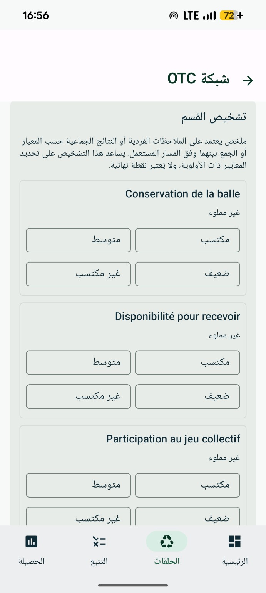
تحضير S1، الملاحظة، ثم استثمار التشخيص لتوجيه الحلقة.
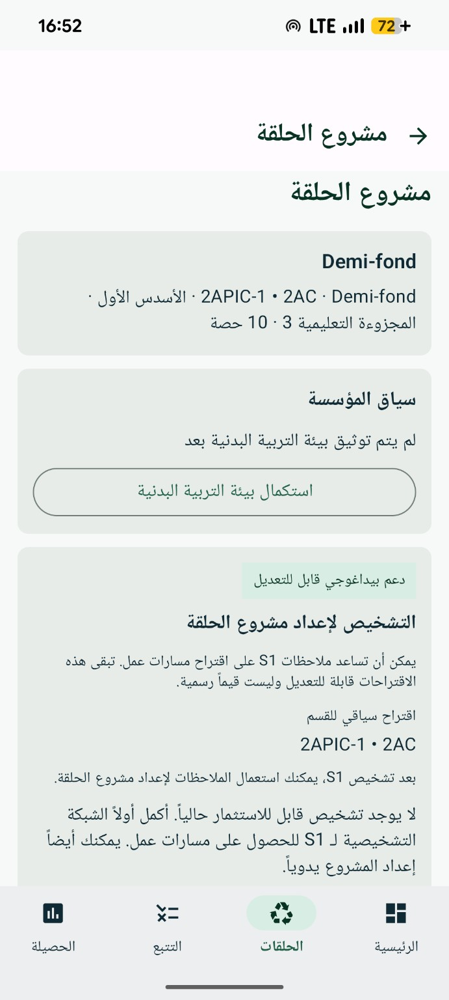
تحويل الملاحظات إلى أولويات ومقترحات بيداغوجية قابلة للتعديل.
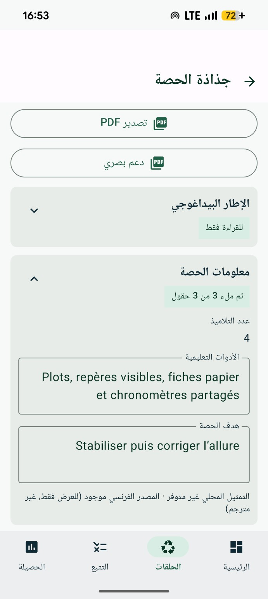
هدف، أدوات، مراحل، تقويم وملاحظات داخل جذاذة منظمة.
الحضور، التأخر، اللباس والملاحظات الفردية عبر تحكم واضح وسريع.
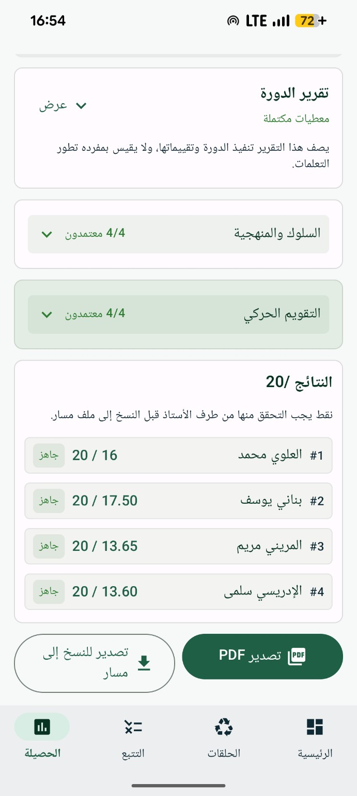
مراجعة التقويم والنتائج، إغلاق الحلقة ثم التصدير PDF أو للنسخ إلى مسار.
يعتمد EPSIQ إجراءات بسيطة وقراءة واضحة وتتبعاً سريعاً. الرقمنة ترافق الأستاذ دون أن تحل محل التدريس.
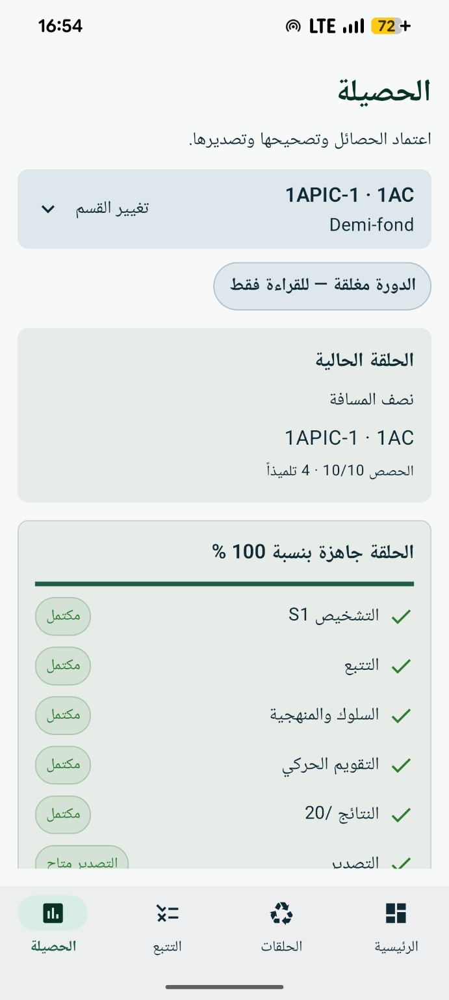
تعمل الحصيلة كقائمة تحقق ذكية: تُظهر ما اكتمل، وما ينقص، وما أصبح جاهزاً للتصدير.
إجراء رئيسي واحد، والحالة الحالية والخطوة التالية تبقى واضحة.
صُممت الوظائف البيداغوجية الأساسية لتبقى قابلة للاستعمال في الميدان دون الاعتماد على اتصال دائم.
يركز التشغيل الحالي على بيانات العمل المحفوظة محلياً على الجهاز.
تبقى النصوص والأهداف والشبكات والباريمات الرسمية المتحقق منها منفصلة عن المحتوى المشتق أو المقترح.
EPSIQ يرافق الأستاذ ولا يعوضه. تبقى القرارات البيداغوجية النهائية من مسؤولية الأستاذ.
EPSIQ ليس تطبيقاً رسمياً للوزارة ولا يمثل اعتماداً منها. يسعى تصميمه إلى احترام التوجيهات التربوية والنصوص المنظمة والأهداف والشبكات والباريمات الرسمية المتحقق منها عند إدماجها، دون إضفاء صفة رسمية على المحتوى المكيف أو المولد.
يبقى مسار منفصلاً عن EPSIQ. تساعد وظائف التصدير في تهيئة عملية النسخ أو النقل حسب الصيغ المدعومة.
بعد التجربة الأولى، فعّل الولوج السنوي لمواصلة عملك مع EPSIQ.
يضع EPSIQ أيضاً موارد تربوية عملية ومجانية رهن إشارة أساتذة التربية البدنية والرياضية، جاهزة للتحميل والاستعمال في الميدان.
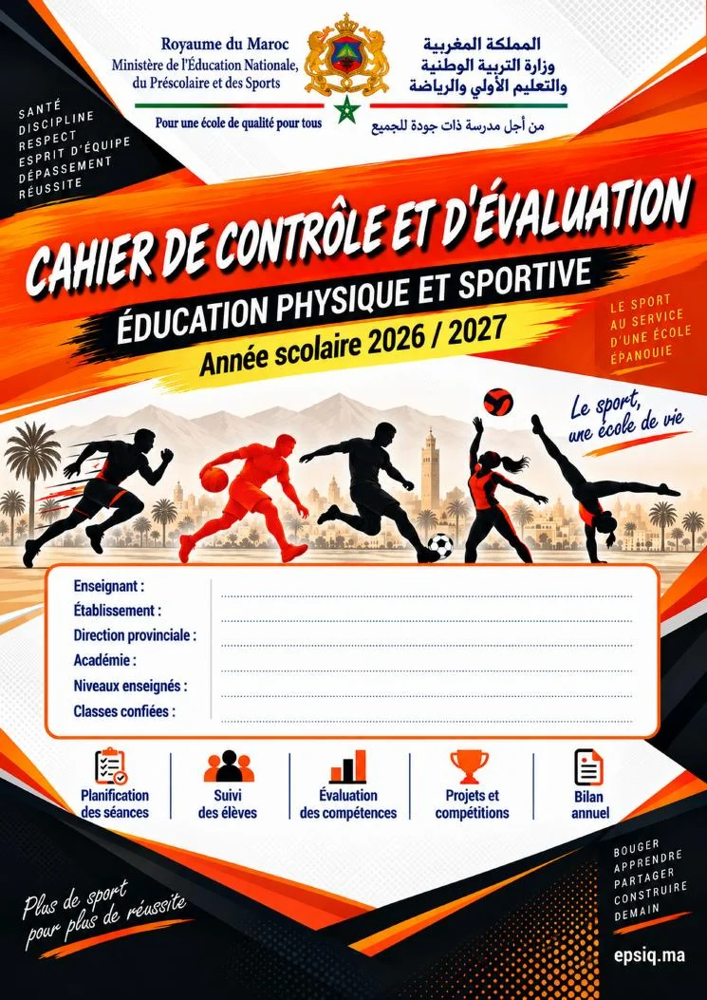
وثيقة قابلة للطباعة تساعد الأستاذ على تنظيم السنة، تتبع التلاميذ والاحتفاظ بحصيلة مركزة للحلقات المنجزة.
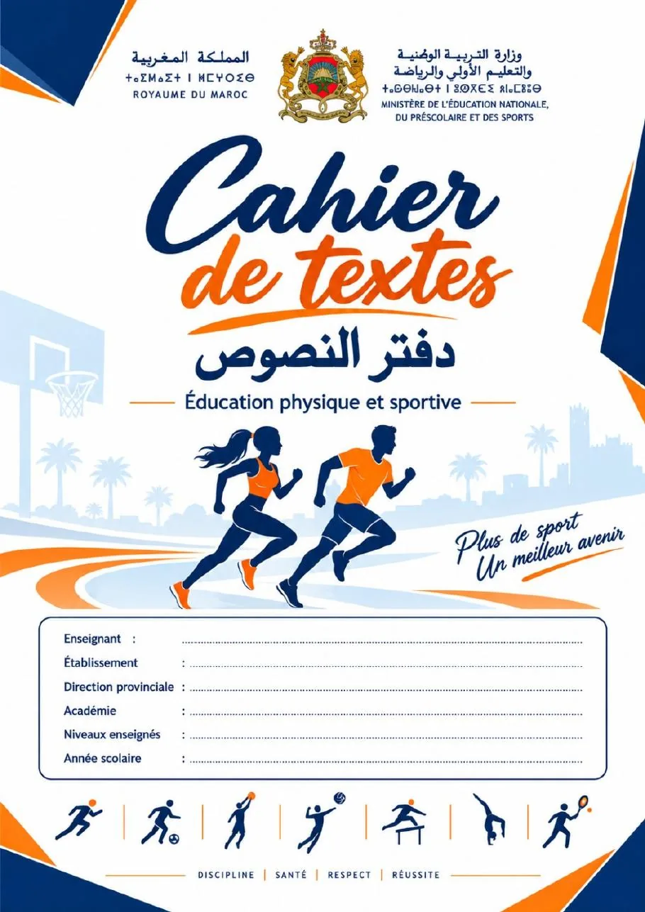
دفتر جاهز للطباعة لتوثيق حصص التربية البدنية والرياضية، متوفر في نسختين مخصصتين للسلكين الإعدادي والتأهيلي.
النسخة الحالية موجهة لأساتذة التربية البدنية والرياضية في السلكين الإعدادي والتأهيلي بالمغرب: 1AC و2AC و3AC والجذع المشترك و1BAC و2BAC. التطبيق متوفر على Android.
صُممت الوظائف الأساسية للتحضير والتتبع والتقويم للعمل محلياً ودون اتصال في الميدان. قد يلزم الاتصال لبعض الخدمات الخارجية أو الوظائف المستقبلية عبر الإنترنت.
تبقى بيانات العمل البيداغوجية محفوظة أساساً محلياً على الجهاز. عند تفعيل تحليلات استعمال المنتج، لا تُرسل إلى PostHog Cloud EU إلا أحداث تقنية ومحدودة عن الاستعمال؛ ولا تُرسل لوائح التلاميذ أو الأسماء أو رموز مسار أو النقط أو الملاحظات أو المحتوى البيداغوجي. راجع سياسة الخصوصية.
لا. يساعد EPSIQ الأستاذ على التحضير والتتبع والتقويم وتنظيم النتائج، ثم تسهّل وظائف التصدير عملية النسخ أو النقل نحو الأدوات المؤسساتية حسب الصيغ المدعومة.
عندما يتم إدماج مرجع رسمي والتحقق منه، يبقى محمياً ومميزاً بوضوح. أما المحتوى المولد أو المكيف للمساعدة في التحضير فيبقى اقتراحاً بيداغوجياً قابلاً للتعديل والتحقق من طرف الأستاذ.
يعتمد EPSIQ خصوصاً، بعد التحقق من المصادر وإدماجها، على التوجيهات التربوية للتربية البدنية والرياضية بالسلك الإعدادي (OP 2009) والسلك التأهيلي (OP 2007)، إضافة إلى الأهداف والنصوص والمذكرات المنظمة وشبكات الملاحظة وباريمات التقويم المطبقة. كما يُغنى التصميم بمتابعة مراجع وممارسات دولية في المجال للاستلهام والمقارنة، دون تقديمها كمعايير رسمية مغربية.
نعم. عندما يتم التحقق من شبكات التقويم والمعايير والباريمات وطرائق التنقيط الرسمية وإدماجها، يستخدمها EPSIQ كمراجع محمية للتقويم. ويبقى المحتوى المكيف أو المشتق أو المقترح منفصلاً عنها ولا يُقدّم أبداً كقيمة رسمية.
يتيح EPSIQ اكتشاف تجربة كاملة أولاً. ولمواصلة العمل بعد ذلك مع الحلقات التالية، يمكن تفعيل ولوج سنوي. يتم توضيح طريقة وشروط التفعيل قبل أي إجراء.
يدعم موقع EPSIQ وواجهته الفرنسية والعربية. وعندما لا تتوفر نسخة عربية متحقق منها لمحتوى بيداغوجي، قد يحتفظ EPSIQ بالمصدر الفرنسي مع الإشارة إلى ذلك بوضوح بدلاً من اختراع ترجمة.
يتحقق EPSIQ من توفر الإصدارات الجديدة ويخبرك عندما يتوفر تحديث. يتم التحميل من القناة الرسمية لـEPSIQ، ويبقى تثبيت التحديث تحت تحكمك.
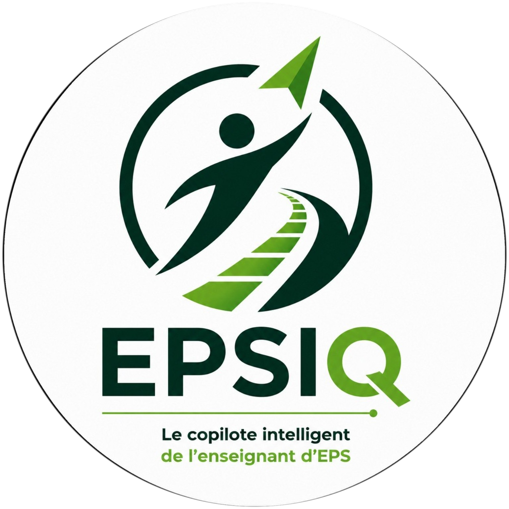
EPSIQ 2.0.2 متاح الآن على Android لأساتذة التربية البدنية والرياضية بالسلكين الإعدادي والتأهيلي بالمغرب.
الإصدار 2.0.2 · Android 7.0+ · الإعدادي + التأهيلي · تحميل رسمي
للتثبيت أو الاستعمال أو ملاحظات الميدان أو الإبلاغ عن مشكلة، تواصل معنا.